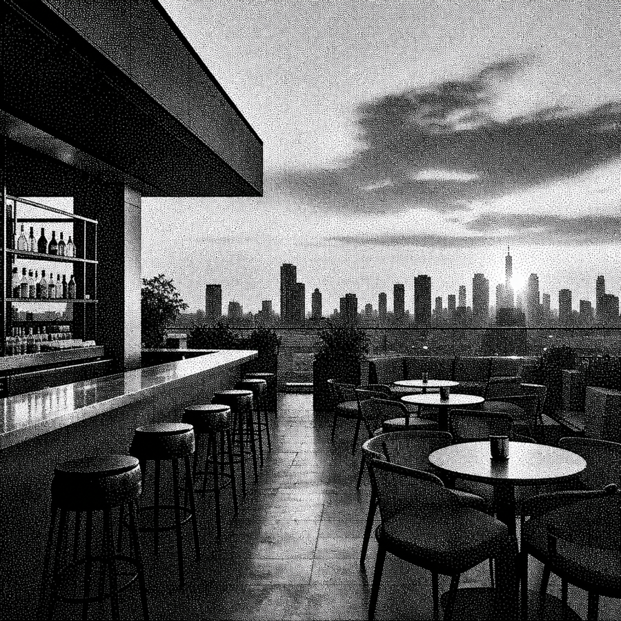
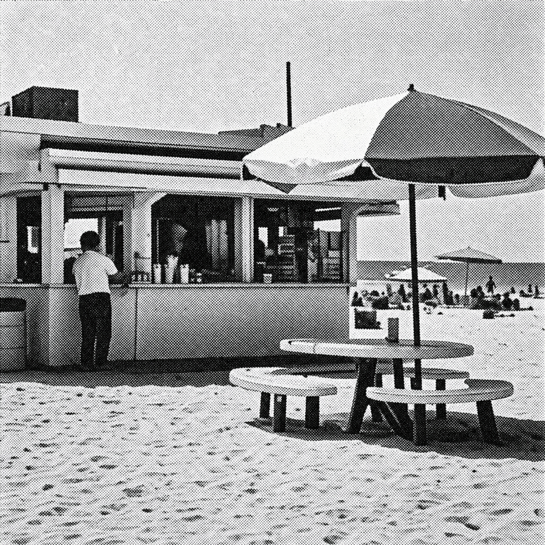
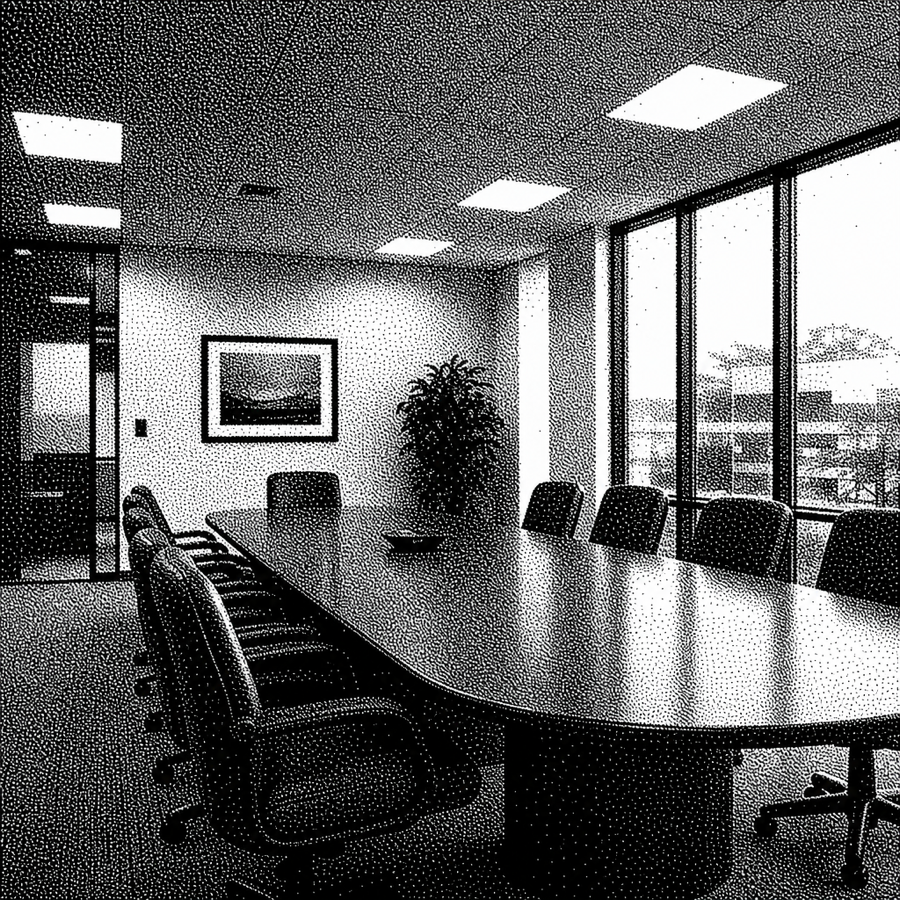

FIG. DP-01Day Pass
Free "permission slip" to leave work for happy hour — dramatizes the thesis at near-zero cost. Recurring acquisition format.
An event series disguised as corporate meetings
You're not "attending a party." You're "joining a mandatory quarterly alignment session."
DJs perform from conference rooms, abandoned offices, cubicle farms, midtown towers, hotel business centers. Attendees receive calendar invites, onboarding documents, NDAs, fake internal memos, and employee credentials.

FIG. DP-01Free "permission slip" to leave work for happy hour — dramatizes the thesis at near-zero cost. Recurring acquisition format.

FIG. OS-01Real panel/Q&A staged in swimsuits at a beach DJ/concessions area. High shareability, low production build.

FIG. AH-01Daytime, alcohol-free networking format. Opens a Friday-morning slot. Breakfast-meeting register.
Formats
Series Ideas
Ambient Opportunity
Continuous ambient livestreams: fake office security cameras, empty conference rooms, desktop screensavers, corporate radio stations, AI receptionist loops, endless waiting-room music.
Get in touch if interested →